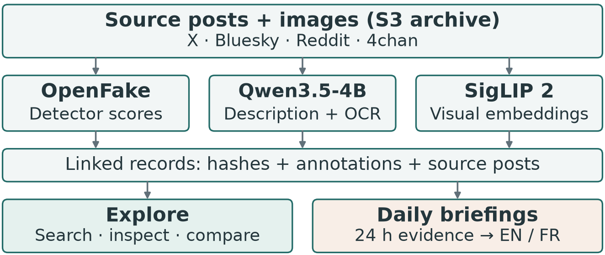
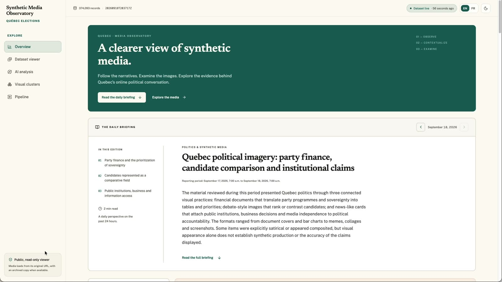
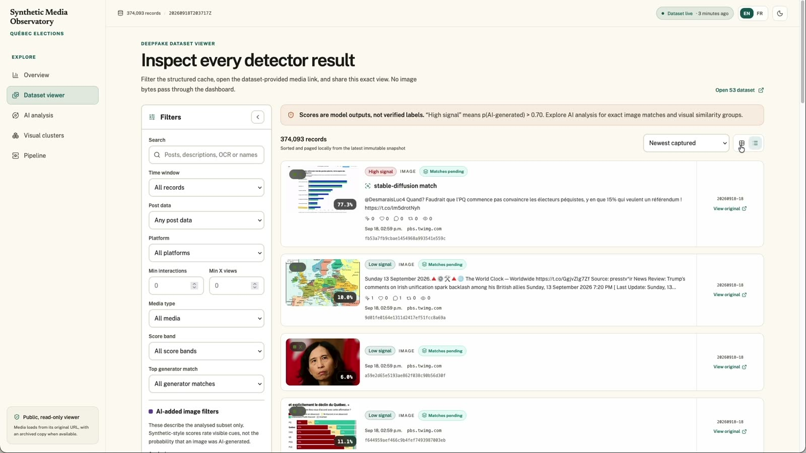
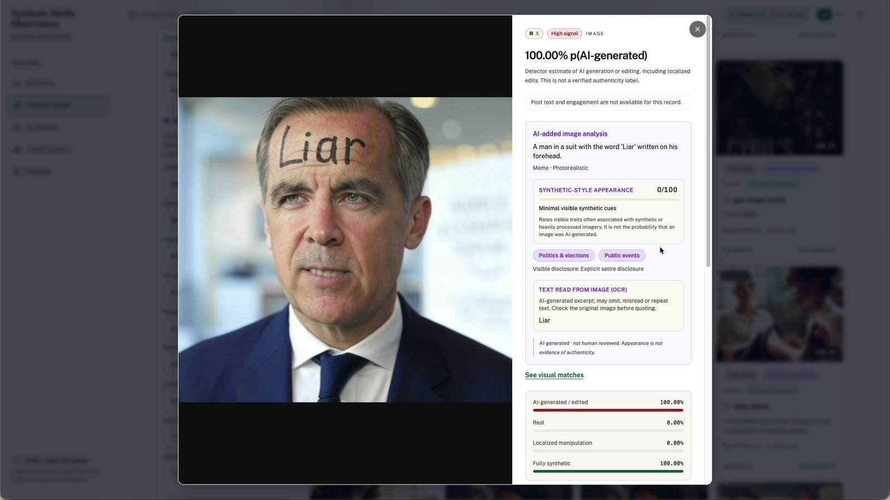
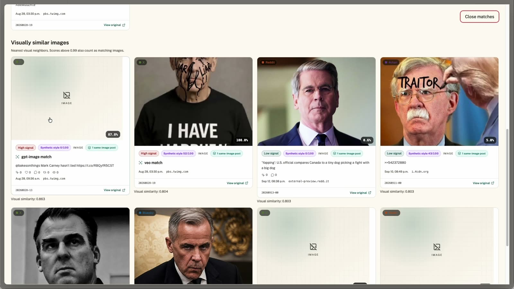
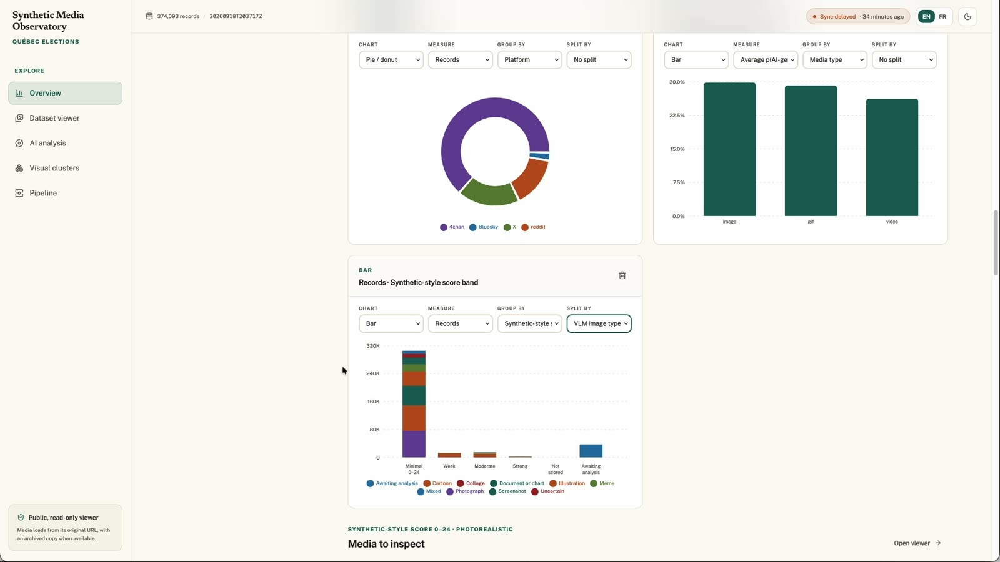
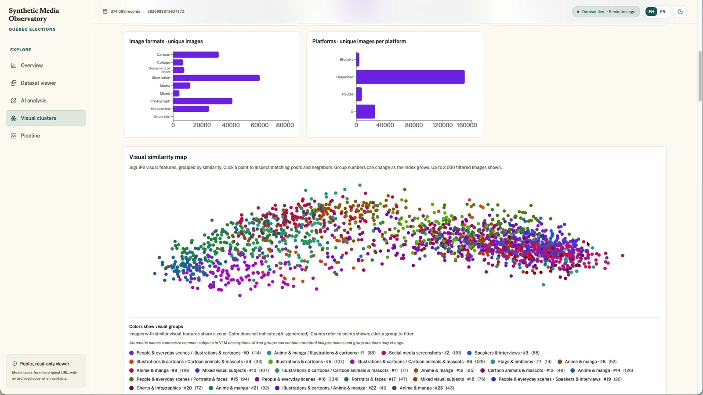
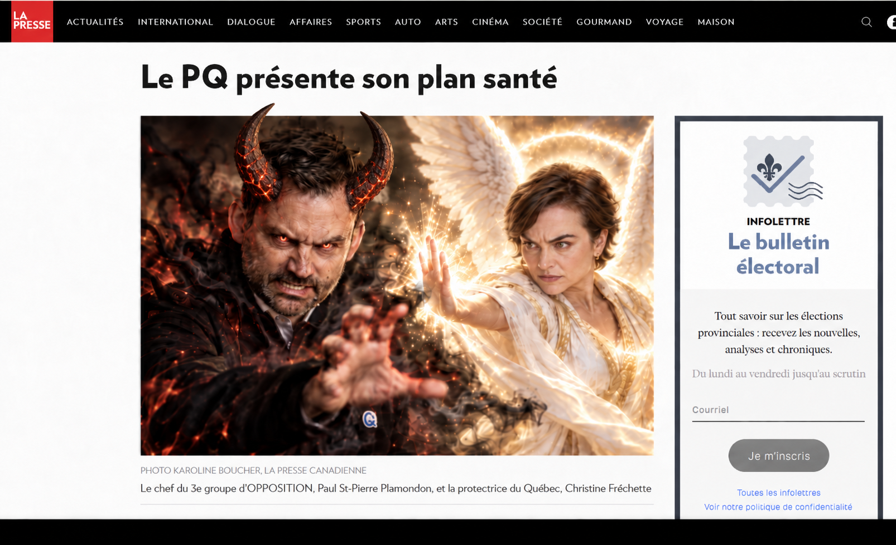
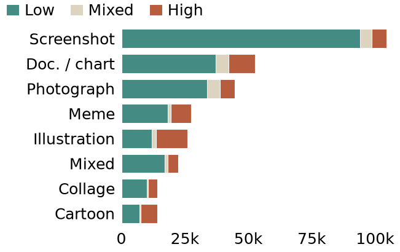

Demo video
Abstract
We present the Synthetic Media Observatory, a public dashboard for researchers studying election media and journalists monitoring political discourse. The system connects posts from X, Bluesky, Reddit, and 4chan with OpenFake detector scores, vision-language annotations, and visual similarity search. Users can search text visible in images, inspect source context, distinguish repeated captures from distinct posts, and compare image formats across detector bands. Daily English and French briefings provide an entry point, summarizing the main discussion points and providing example sources. The system follows current events, initially the October 2026 Quebec election, and we present examples from this deployment.
System

What you can do
Start from a daily briefing
English and French briefings summarize the previous 24 hours of discussion and link to the source examples behind each point.

Filter every record
The dataset viewer combines date, platform, detector band, topic, format, and annotation-text filters over the collection.

Inspect an image in context
Each record shows the detector score, the model's description and transcribed text, and the posts that share the same image.

Find visually similar images
SigLIP 2 embeddings and a FAISS index retrieve exact reposts and nearest neighbours, to trace how a visual framing travels across posts.

Compare subsets with charts
The chart builder compares counts, model outputs, and engagement by platform, time, topic, or format, and carries filters into the viewer.

Explore visual clusters
A similarity map groups images by visual content, so recurring themes and formats can be opened and inspected together.

From the paper


Snapshot of November 17, 2026. Record counts include repeated captures and do not estimate prevalence.
Citation
@inproceedings{livernoche2027observatory,
title = {Monitoring Election Discourse with a Synthetic Media Observatory},
author = {Livernoche, Victor and Tian, Jacob-Junqi and Musulan, Andreea and
Godbout, Jean-Fran{\c{c}}ois and Rabbany, Reihaneh},
booktitle = {Proceedings of the AAAI Conference on Artificial Intelligence},
note = {Demonstration Program},
year = {2027}
}